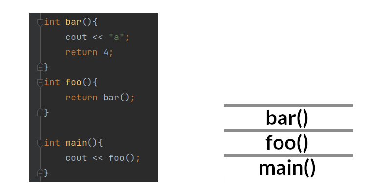

<!DOCTYPE html>
<html lang="en">
  <head>
    <meta charset="utf-8" />
    <meta name="viewport" content="width=device-width, initial-scale=1.0, maximum-scale=1.0, user-scalable=no" />

    <title>Pilas</title>
    <link rel="shortcut icon" href="./favicon.ico"/>
    <link rel="stylesheet" href="./dist/reveal.css" />
    <link rel="stylesheet" href="./dist/theme/league.css" id="theme" />
    <link rel="stylesheet" href="./css/highlight/zenburn.css" />
    <link rel="stylesheet" href="./_assets/slides/css/filminas.css" />

  </head>
  <body>
    <div class="reveal">
      <div class="slides"><section  data-markdown><script type="text/template">
# Pilas
    
<small>Created by
    <a href="https://t.me/rmarku" target="_blank">
        <i class="fab fa-telegram-plane"></i>rmarku
    </a>
</small>

</script></section><section  data-markdown><script type="text/template">
## Pilas

Una pila es una colección ordenada de elementos en la que pueden insertarse y suprimirse elementos por un extremo
llamado tope


</script></section><section  data-markdown><script type="text/template">
## Pilas

Las pilas son estructuras que se encuentran frecuentemente en la vida diaraia:
 
* La forma en que se acomodan los platos en algunas cafeterías
* La manera en que se colocan libros en un escritorio
* Una lata de pelotas de tenis 
* Monedas en un porta monedas

</script></section><section  data-markdown><script type="text/template">
## Pilas

Por ejemplo, la forma en que se acomodan los libros en un escritorio puede verse de la siguiente manera: 
* se puede añadir un libro a una pila poniéndolo  arriba
* se puede ver qué libro se encuentra en la cima
* se tomará el último que se colocó.


</script></section><section  data-markdown><script type="text/template">
## Pilas

La pila es uno de los conceptos más útiles dentro de la ciencia de la computación.

## Stack Overflow


</script></section><section  data-markdown><script type="text/template">
## Pilas

Por ej, la pila de llamadas a funciones (call stack)



</script></section><section  data-markdown><script type="text/template">
## Pilas
   
La propiedad anterior se conoce como **LIFO** *( Last In First Out )*
Es decir, el último en entrar será el primero en salir y al que se tenga acceso.

</script></section><section  data-markdown><script type="text/template">
## TDA - Pila

### Operaciones a realizar con una pila:

* **poner** - push()
* **sacar** - pop()
* **verTope** - peek()
* **esVacia** - isEmpty()

</script></section><section  data-markdown><script type="text/template">
## Colas
## A implementar.


</script></section></div>
    </div>

    <script src="./dist/reveal.js"></script>

    <script src="./plugin/markdown/markdown.js"></script>
    <script src="./plugin/highlight/highlight.js"></script>
    <script src="./plugin/zoom/zoom.js"></script>
    <script src="./plugin/notes/notes.js"></script>
    <script src="./plugin/math/math.js"></script>
    <script>
      function extend() {
        var target = {};
        for (var i = 0; i < arguments.length; i++) {
          var source = arguments[i];
          for (var key in source) {
            if (source.hasOwnProperty(key)) {
              target[key] = source[key];
            }
          }
        }
        return target;
      }

      // default options to init reveal.js
      var defaultOptions = {
        controls: true,
        progress: true,
        history: true,
        center: true,
        transition: 'default', // none/fade/slide/convex/concave/zoom
        plugins: [
          RevealMarkdown,
          RevealHighlight,
          RevealZoom,
          RevealNotes,
          RevealMath
        ]
      };

      // options from URL query string
      var queryOptions = Reveal().getQueryHash() || {};

      var options = extend(defaultOptions, {"controls":true,"progress":true,"slideNumber":true}, queryOptions);
    </script>

    <script src="./_assets/slides/js/pruebas.js"></script>
    <script src="./_assets/slides/js/init.js"></script>

    <script>
      Reveal.initialize(options);
    </script>
  </body>
</html>
